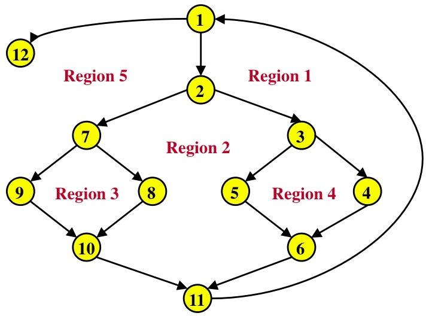

Q1. What do we capture in use-case modeling?
- user interface requirements
- hardware requirements
- acceptance tests
- system behaviour
- data requirements
Q2. A use case captures the system's behaviour from which point of view?
- design
- developer's
- user interface
- user's
- domain model
Q3. Which statement is not true about a use-case actor?
- An actor can represent a person.
- An actor also can be represented by a domain model class.
- An actor represents a role a user can play.
- An actor can represent a database.
- An actor can represent a system. (It can represent an external system.)
Q4. Which statement is not true about a use case?
- It describes actor/system interaction.
- It represents part of the system's user interface.
- It is an abstraction of one or more scenarios.
- It can be represented as a UML class.
- It is always initiated by an actor.
Q5. An alternative flow of events for a use case cannot show what type of behaviour?
- exceptional
- shared
- variant
- optional
- error
Q6. "The system should register a student in less than a second" is an example of what type of requirement?
- functional
- nonfunctional
- pseudo
- data
- user interface
Q7. The purpose of software testing is to show that
- the software has no defects (bugs).
- the program code is well structured.
- the software has a good architecture.
- the software is of good quality.
- the software has defects (bugs).
Q8. Testing every statement in a program guarantees that all defects (bugs) will be found.
- Yes, definitely!
- Yes, but only for simple programs.
- Yes, but only for programs using object-oriented languages.
- No, no way!!
- Gee, I don't know??
Q9. The source code of a software component is required to do which type of testing?
- regression testing
- beta testing
- alpha testing
- acceptance testing
- system testing
Q10. Basis path testing ensures that we have tested at least
- all interactions between programs.
- all the ways of executing the loops in a program.
- all the statements in a program.
- all the data structures in a program.
- all the inputs to a program.
Q11. What is the cyclomatic complexity of the procedure in the figure?
Procedure: process records
1.
Do while records remain
2.
read record
3.
If record field 1 = 0
4.
If record field 2 = 0
5.
store in buffer
6.
increment counter
7.
Else
8.
print record
9.
Endif
10.
Else
11.
If record field 3 = 0
12.
store in file
13.
increment counter
14.
Else
15.
delete record
16.
Endif
17.
Endif
18.
Enddo
End

- Flow graph node to procedure
- statement mapping:
Node
Statement
- 1.
- 2.
- 3.
- 4.
- 5.
- 6.
- 7.
- 8.
- 9.
- 10.
- 11.
- 12.
- 1
- 2, 3
- 4
- 5, 6
- 7, 8
- 9
- 10, 11
- 12, 13
- 14, 15
- 16
- 17
- 18
- 3
- 4
- 5
- 6
- 7
Q12. When testing a simple loop with bounds 1 to 10, what should be the number of passes through the loop?
Q13. When testing a nested loop, we initially test the inner loop while holding the outer loop at
- its minimum value.
- its middle value.
- its maximum value.
- both its minimum and maximum value.
- any value.
Q14. The purpose of data flow testing is to ensure the correctness of values
Q15. Black box testing uses test values at the boundaries of a subdomain because
- these values are easier for us to figure out.
- this will make integrating components easier.
- errors are more likely to occur here.
- black box testing only works for such values.
- these values can be given to us by the users.
Q16. One of the required inputs for a program that does room scheduling for a public venue is the day of the week, which is input as Sunday, Monday, etc. When testing this program for the input day of the week, what are the minimum number of test values that you would use?
- 5
- 7
- 8 [Test for all the days of the week plus one value that is not a day of the week.]
- 9
- 10
Q17. Black box testing techniques are used in what type of testing?
- unit
- condition
- loop
- integration
- data flow
Q18. Test cases for state-based testing can be derived from the
- use case model.
- state machine diagrams.
- basis paths.
- domain model.
- nonfunctional requirements.
Q19. Integration testing focuses on
- the flow of control in a component.
- the logical conditions in a component.
- validating user requirements.
- the interaction among the components.
- integrating a database with the software system.
Q20. Which statement is true about system testing and acceptance testing?
- System testing is done after acceptance testing.
- System testing is done by the developers; acceptance testing is done by the client.
- System testing is done at the client's site; acceptance testing is done at the developer's site.
- System testing is done by the client; acceptance testing is done by the developers.
- None of the above is true.
Q21. The purpose of an acceptance test plan is to
- verify the acceptability of the code structure.
- specify the criteria for determining whether the system is finished.
- list all the requirements for the system.
- define the scope of the system development.
- define the goals of the system.
Q22. One purpose of system analysis and design is to
- determine the cost of developing the system.
- determine the time required to implement the system.
- capture the system's nonfunctional requirements.
- adapt the requirements to the implementation environment.
- obtain the client's approval for developing the system.
Q23. System analysis and design deals with the implementation environment by
Q24. In the Model-View-Controller (MVC) architectural pattern, the Model represents
Q25. System analysis and design distributes the functionality of a use case into boundary, entity and control classes because
- these are the only kinds of classes available to us.
- these classes are easier to test.
- we want to isolate specific types of changes to specific types of classes.
- state machine diagrams use these classes.
- object interaction is more easily described using these classes.
Q26. In system analysis and design, an entity class represents
- information about a user of the system.
- information that is persistent.
- system dependencies on actors.
- information that is transient.
- coordination, sequencing, transactions and control of other objects.
Q27. According to the best practices of analysis object interaction, which one of the following interactions should not be allowed?
- interactions between a boundary object and a control object
- interactions between two control objects
- interactions between a boundary object and an entity object
- interactions between two boundary objects
- interactions between a control object and an entity object
Q28. A design class is most cohesive when it
Q29. A state machine diagram describes the behaviour of
- an object.
- a use case.
- an operation.
- an actor.
- a class.
Q30. Which statement is not true about a state in a state machine diagram?
- It has duration.
- It can be anonymous (unnamed).
- It can only be entered by the triggering of an event.
- It may be characterized by the value of one or more attributes.
- It may be characterized by the existence of a link to another object.
Q31. An event on a state machine diagram can represent
- the completion of an activity.
- a return from a message send.
- exiting a state.
- the passage of a designated period of time.
- a guard becoming true.
Q32. A state machine diagram responds to every event that
Q33. Which of the following is not true about design patterns?
Q34. The Strategy design pattern is used to
Q35. The Observer design pattern is used to
Q36. The Mediator design pattern is used to
Q37. The Bridge design pattern is used to